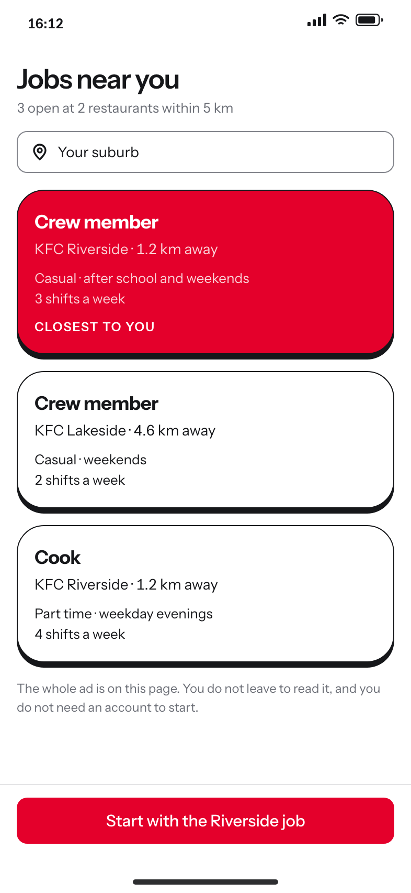
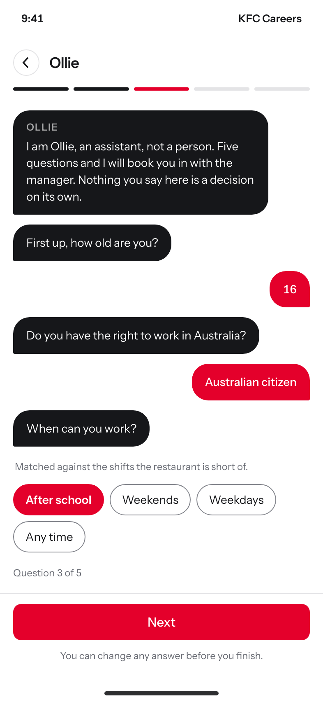
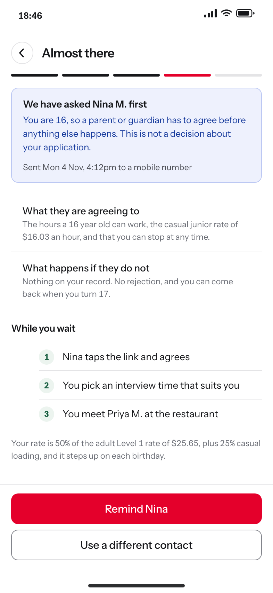
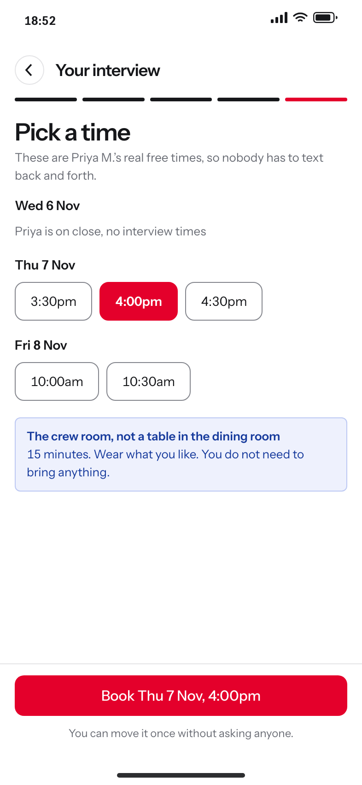
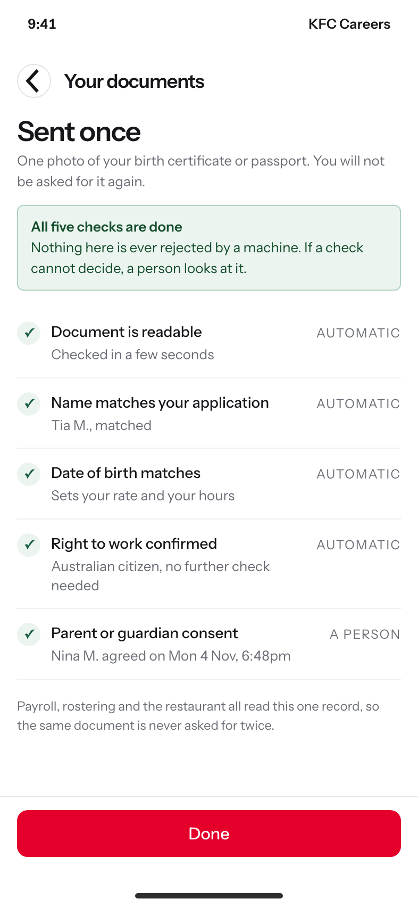
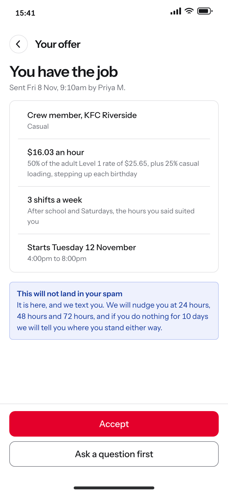
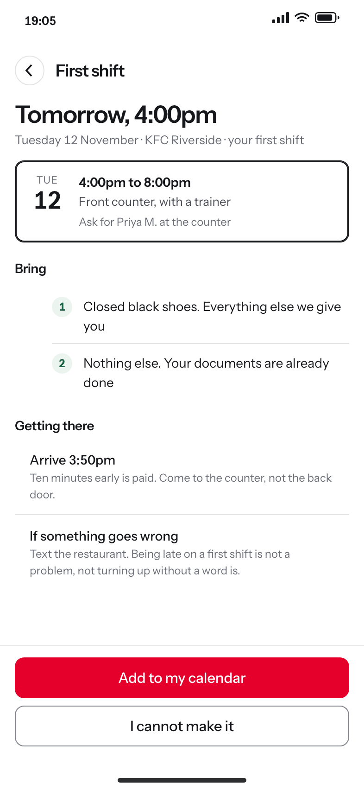
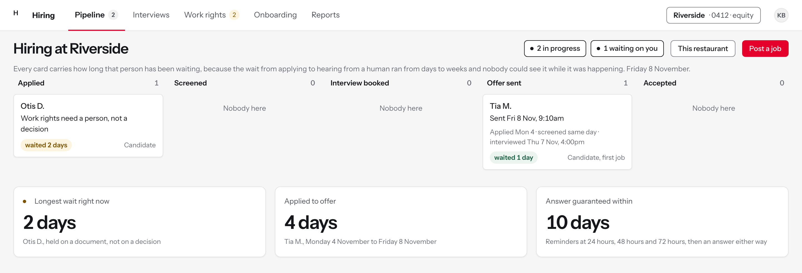
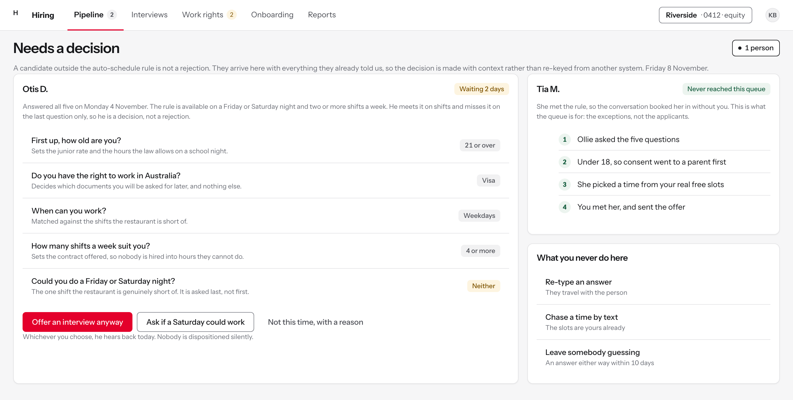
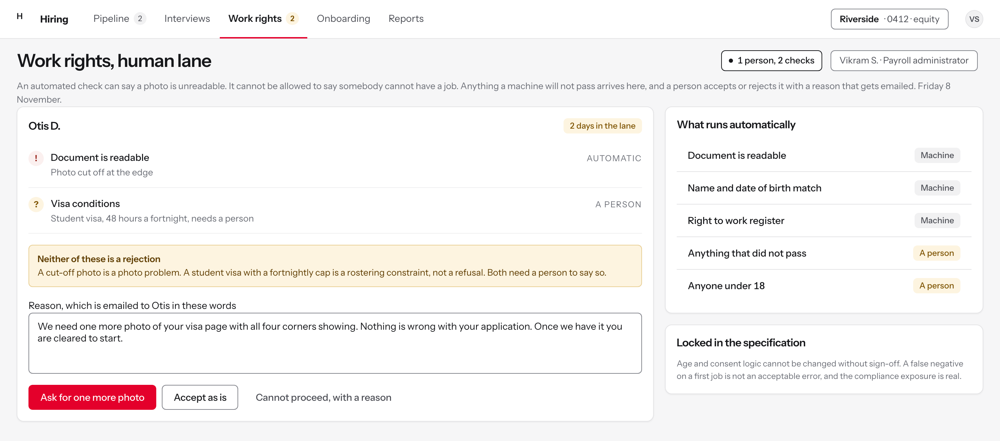

Hiring and onboarding, module by module
Ten modules from finding a job to turning up for a first shift. Seven belong to the candidate and three to the manager, because the research found the admin burden was the experience.
- Delivered
- A nine-stage service blueprint from Identify to Start, a competency framework for the manager pipeline, and an automated screening-to-interview path specified around the failing moments.
- Evidence behind it
- Five of the seven moments that matter failed basic expectations. Candidates uploaded the same documents twice, managers re-keyed data between systems, offers landed in spam, and the wait for a first human touch ran from days to weeks.
- How it is built
- Hand-written HTML and CSS on the same token-based design system as the safety reporting and workforce products, gated by a contrast script, a component manifest, a consistency check and a site lint. Components were checked against shipped products before they were drawn; the reference list is in the repository.
- Confidentiality
- The vendor is removed and the assistant is renamed. Every candidate, manager and restaurant on these screens is written for the walkthrough. The findings are from the delivered research.
The admin burden was the experience
The business had a labour-market theory: the jobs were hard to fill because the labour market was tight. The research pointed at the company's own process instead. Candidates uploaded the same documents more than once even when everything was correct, managers re-keyed candidate data across systems, offers landed in spam, and the wait for a first human touch ran from days to weeks.
Two moments had no data at all. Nobody measured whether a hired crew member turned up to their first shift, and nobody measured retention at ninety days. That absence became a documented finding with an owner rather than an invented number, and two of the screens below exist to close it.
Work rights were the hardest part of the experience and the step that most needed a person. First-job candidates did not know what documents they needed, consent forms expired, and payroll discovered the wrong documents at pay time. So nothing here is ever automatically rejected. Checks run on their own and anything that fails goes to a human with the reason attached.
Finding a job, without an account first
A candidate cannot see what happened to an application, because there is nowhere to see it. There is no account, no saved job and no application view, so an offer had nowhere to live but an inbox. The job ad itself opens on another company's site in a new tab, so the candidate leaves before they have read anything.
The search answers the two questions a sixteen year old actually has, which are whether it is close enough to get to and whether the hours fit around school. Everything else waits.
No account is asked for before there is a job to attach it to. The account arrives with the offer, which is the first moment it has anything to hold.

Figure 1Search by suburb, with the job ad in the same place the search was, rather than on someone else's site in a new tab.
No account before you have a job
FindingGetting to the job at all was one of the five moments that failed. There is no job detail page today: the title and the apply button both open a vendor page in a new tab, so a candidate leaves the brand's own site to read the ad. There is no account either, so there is nowhere to go back to and see what happened.
DecisionThe ad is on this page and the application starts from it. Nothing is asked for until there is something to ask about, and the account is created at the offer, when there is finally something to keep.
RejectedRegister first, browse second, which is what produces a funnel with a leak at the top and a database of people who never applied.
The card answers the two questions a sixteen year old has
FindingCandidates were choosing between restaurants on distance and hours and could see neither until they had clicked through.
DecisionHow far away and which shifts, on the card. The closest one is marked, because the nearest restaurant is the one a first-job candidate can actually get to.
RejectedA job description above the fold. Nobody reads it, and it hides the two facts that decide the application.
The assistant says what it is before it starts
FindingNobody told candidates whether a person was reading their application or how long any of it would take.
DecisionFive questions, a name, and the fact that you can stop. Stated before the first question rather than in a policy nobody opens.
RejectedOpening straight into the first question, which reads as a form wearing a conversation as a costume.
The job sits on the brand's own card
FindingThe job cards candidates met were the vendor's, and looked like it. The brand's own cards are very round, white, and sit on a hard black ledge with no blur.
DecisionThe thing a candidate is choosing between is drawn in the brand's most recognisable shape. With the logo removed you would still know whose site this is.
RejectedThe vendor's card, which is neutral, competent and belongs to no one.
Five questions, asked as a conversation
The old application asked more than it decided, across more than one system. Screening reduces to five things that actually change a decision: minimum age, work rights, availability, shifts per week, and the high-demand shift.
The assistant says what it is in its first line, and says that nothing in the conversation is a decision on its own. That line is the work-rights rule, put where the candidate can see it.
The careers site advertises this assistant in black and red with the brand display face. What candidates met did not look like the brand that advertised it, and sat behind a disabled composer and a terms gate. This module builds the one the brand promised.

Figure 2The five questions, as tappable answers rather than a form. The progress is visible and any answer can be changed before the end.
The advertised assistant and the real one are two different products
FindingCandidates met a terms gate and a disabled composer before the first question, in a widget that did not look like the brand that advertised it.
DecisionBuild the one the brand promised: black bubbles, red answers, and the first thing on screen is the first question.
RejectedRestyling the vendor widget, which still opens on a terms dialog.
Five, because five is what changes a decision
FindingThe old application was a multi-system form that asked more than it decided, and managers then re-keyed the answers into another system anyway.
DecisionMinimum age, work rights, availability, shifts a week, and the high-demand shift. Nothing else is asked, because nothing else changes what happens next.
RejectedA shorter version of the same form. The delay was in the routing after the form, not only in the form.
Answers are tapped, not typed
FindingFirst-job candidates abandoned fields that rejected their input without saying why, and a date of birth field is the worst of them.
DecisionEvery answer is a chip. There is no format to get wrong, and the whole set is visible, so a candidate can see what they are choosing between.
RejectedFree text with validation, which is a quiz where the rules are only revealed when you fail.
Every question says why it is asked
FindingA screening question about availability read as a test candidates could fail, so they answered what they thought was wanted rather than what was true.
DecisionOne line under each question saying what it decides. An honest answer is more useful than a flattering one, and saying so is what gets it.
RejectedExplaining nothing, which is how a form full of reasonable questions reads as an interrogation.
The hard question is asked last
FindingOf the five, the high-demand shift is the one the restaurant is genuinely short of, and leading with it reads as the only thing that matters.
DecisionIt is question five. By then the candidate knows what the job is, and a no on this question is a conversation rather than an exit.
RejectedAsking it first as a qualifier, which turns the most valuable applicants away before they know what they are turning down.
Consent before any decision
Under-age candidates are the core of this workforce, and a false negative on a sixteen year old's first job is not an acceptable error. The parental consent branch is compliance-locked in the specification: it runs before anything is decided, not after a decision has been made and needs undoing.
Consent is asked for in words a parent can act on in under a minute, on a phone, without an account. The alternative was a form emailed to a parent, which is how consent forms came to expire unnoticed in the first place.
Nothing about the application advances while consent is outstanding, and the candidate can see that it is outstanding rather than assuming they have been ignored.

Figure 3The branch that runs first. Consent is captured from the parent before the application moves, and both people can see where it is up to.
The branch runs before anything is decided
FindingUnder-age applicants were being assessed and sometimes rejected before anyone established whether a parent had agreed to any of it.
DecisionAt sixteen, consent goes out before a single decision is recorded. The screen says so in those words, so silence does not read as rejection.
RejectedAssessing first and collecting consent at the offer, which is both the wrong order legally and the wrong order for the person waiting.
A false negative on a first job is not an acceptable error
FindingThe cost of wrongly rejecting a sixteen year old's first application is a person who never comes back, and the business had no way to see that happening.
DecisionNo response at all is recorded as no decision, not as a rejection. She can return at seventeen with nothing against her name.
RejectedAuto-rejecting on a consent timeout, which is the cheapest thing to build and the most expensive thing to be wrong about.
The rate is named, in the consent
FindingParents were agreeing to employment without being told the junior rate or the hours a school night allows.
DecisionThe rate is stated as a percentage of the adult rate, with the step-ups. A guardian agreeing to something should be able to see what it is.
RejectedA link to an award summary, which is a document written for payroll and not for a parent on a phone at six in the evening.
Age and consent are locked in the specification
FindingSeven days after it was signed the consent form expired, and nobody owned the rule that said so.
DecisionThe under-18 branch is compliance-locked in the specification: it cannot change without people-function and compliance sign-off, and the screen says so.
RejectedTreating it as configuration, which is how a rule becomes a setting.
Booking her own interview
Interviews happened at dining-room tables and in food courts, rushed and inconsistent, and the wait to get one ran from days to weeks. Taking the admin out of the manager's workflow is what returns their time to the conversation.
The times offered are real times from the manager's own availability, so booking one is a booking rather than a request that then waits. A day with nothing free says so rather than showing an empty list.
The room is named, because an interview at a table in the dining room during a lunch rush was one of the failing moments the research recorded.

Figure 4Real slots from the manager's availability, in a room rather than at a dining-room table.
Real times, not a request
FindingManagers were texting candidates back and forth to arrange interviews, which is where days of the wait actually went.
DecisionThe slots are the manager's real free times. Picking one books it. Nobody waits for a reply to a message about when to have a conversation.
RejectedA request form the manager confirms, which is the same back and forth with an extra screen in front of it.
A day with nothing free says so
FindingAn empty day looks like a system failure when it is silently left out, and candidates assumed the process had stalled.
DecisionWednesday is listed with the reason there are no times. An empty day a candidate can see beats a gap they have to infer.
RejectedHiding days with no availability, which is tidier and tells the candidate nothing.
The interview is not a dining room table
FindingInterviews were happening at dining-room tables and in food courts, rushed and inconsistent, and the research named it as a moment that failed.
DecisionThe room is named on the booking, along with how long it takes and that nothing needs to be brought. Taking the admin out is what gives the manager the conversation back.
RejectedLeaving the location to be sorted on the day, which is how it became a table in the dining room in the first place.
Work rights, sent once
Work rights were the hardest part of the whole experience. First-job candidates did not know which documents they needed, consent forms expired, and payroll found the wrong documents at pay time. This is the step that most needed a person and least had one.
Documents are sent once and read by everything downstream, instead of being uploaded again at every stage by a candidate who has already done it correctly.
Every check on the screen says who or what made it. Automated checks run on their own, but the screen never claims a machine decided anything, because a machine does not end an application here.

Figure 5Sent once and reused. Each check names what ran it, and anything that fails goes to a person rather than to a rejection.
Sent once, read by everything
FindingCandidates uploaded the same documents more than once even when everything about them was correct, because payroll, rostering and the restaurant each held their own copy.
DecisionOne record, read by all three. The screen says so, because a candidate asked for a document twice assumes the first one was wrong.
RejectedA document per system, which is the arrangement that produced the duplicate uploads the research found.
Every check says who made it
FindingWork rights was the hardest part of the experience and the step that most needed a person, and candidates could not tell what was happening or who was doing it.
DecisionEach row names whether a machine or a person decided. Four run automatically, and the one that matters most, the consent, was a person.
RejectedA single progress spinner, which hides both the speed of the automated checks and the fact that a human looked at the important one.
Nothing is ever rejected by a machine
FindingAutomated document checks fail for innocent reasons on first-job candidates, and payroll was discovering wrong documents at pay time rather than at hire time.
DecisionA failed check routes to a person. The screen states this before any check runs, so a candidate whose photo is cut off is not sitting at home assuming they have lost the job.
RejectedFully automated verification with auto-rejection on failure, which is cheaper and gets a sixteen year old's first job wrong.
The offer, where she will find it
Offers landed in spam and candidates vanished without a response. Reminders at 24, 48 and 72 hours and dispositioning after ten days mean every candidate gets an answer, either way.
The offer is not an email. It lives where the application lives, and the email is only a pointer to it, because an email was the single point of failure that lost people at the last step.
The rate is explained rather than stated. A first job is the one time somebody has no idea whether a number is normal.

Figure 6An offer with somewhere to live, a rate that is explained, and an answer for everybody within ten days.
It is not an email
FindingOffers landed in spam. The offer was one of the five moments that failed, and it failed at delivery. There is no account on the live site, no sign-in and no application dashboard, so email was the only place an offer could go and a spam filter was the only thing between the candidate and the job.
DecisionThe offer lives where the application lives, and a text points at it. Email is a notification, never the artefact.
RejectedA PDF attached to an email, which is the arrangement that lost the offers in the first place.
The rate is explained, not just stated
FindingFirst-job candidates had no way to tell whether a junior rate was correct, and no way to ask without sounding suspicious.
DecisionThe rate is shown as a percentage of the adult rate, with the fact that it steps up on each birthday. A number a candidate can check is a number they can trust.
RejectedAn hourly figure on its own, which is accurate, unhelpful, and indistinguishable from an error.
The hours are the ones she said suited her
FindingCandidates were hired into hours they had not agreed to, and the mismatch surfaced weeks later as a retention problem nobody was measuring.
DecisionThe offer quotes the availability back. If it does not match what was asked, that is visible before acceptance rather than after the first roster.
RejectedA generic casual contract, which is faster to issue and is the reason the first shift is a moment that fails.
Nobody is left waiting
FindingSome candidates vanished from the process without ever receiving a response, and the business had no view of how many.
DecisionReminders at 24, 48 and 72 hours, and after ten days an answer either way. The promise is on the offer screen, so it is a commitment rather than a background job.
RejectedLetting stale applications lapse silently, which costs nothing to run and is the single rudest thing the old process did.
Before the first shift
Nobody measured whether a hired crew member turned up to their first shift, and nobody measured retention at ninety days. The absence was written up as a finding with an owner rather than filled in with a number.
Everything a person needs on a first day is one screen: when to arrive, what to bring, which door, and the name of the person to ask for.
This screen is also the instrument for the measurement that did not exist, because a first shift that is confirmed is a first shift that can be counted.

Figure 7What to bring, which door, and one name to ask for. Also the first point in the service where turning up can be counted.
Nobody measured whether she turns up
FindingTwo moments had no data at all. Nobody measured whether a hired crew member turned up to their first shift, and nobody measured retention at ninety days.
DecisionThe screen exists because the moment does. It is the first thing in the service that anybody built specifically for the first shift rather than for the paperwork before it.
RejectedTreating the offer as the end of hiring, which is what produced two moments with no owner and no number.
One name to ask for
FindingNew starters arrived at the back door, or asked for whoever was on the roster, and the first ten minutes set the tone for the ninety days nobody was measuring.
DecisionOne name, one door, one time. Arriving ten minutes early is stated as paid, because a sixteen year old will otherwise arrive at four exactly.
RejectedA welcome pack, which is read by nobody on the way to a first shift.
What to bring is almost nothing
FindingCandidates brought documents they had already sent, because nothing told them the paperwork was finished.
DecisionTwo lines: shoes, and nothing else. The second line exists to close the loop on the documents sent three days earlier.
RejectedA checklist of everything that might conceivably be needed, which is how a person ends up carrying a folder to a shift.
The pipeline, with the wait on every card
The wait for a first human touch ran from days to weeks, and it was invisible while it was happening. It surfaced in a report afterwards, to somebody who was not the person who could fix it.
Every card carries how long that person has been waiting, in the place where the manager can do something about it. A number in a weekly report arrives for somebody who has already gone.
A person stands in exactly one stage, with their history on the card. The board is what the manager works from, so a candidate appearing in four columns at once is a board that cannot be trusted.

Figure 8Candidates by stage, with the waiting time on the card rather than in a report nobody opens.
The wait is on the card, not in a report
FindingThe wait for a first human touch ran from days to weeks, and no one in the business could see it while it was happening. It surfaced only in exit data, long after the person had gone.
DecisionEvery card carries how long that person has been waiting. It is the one number that appears on every card in the product.
RejectedA time-to-hire figure on a monthly dashboard, which is the same number arriving too late to act on.
Held on a document is not held on a decision
FindingManagers could not distinguish a candidate they had not looked at from one who was stuck behind a check somebody else owned.
DecisionThe card says which it is. The longest wait on this board belongs to a document, and the stat card underneath says so in those words.
RejectedOne amber state for everything slow, which tells a manager to chase something that is not theirs to chase.
A person is in one column
FindingTwo products on this site have already shipped a screen where the same record appeared in two states at once, and a reader spotted it before any check did.
DecisionOne card per person, with the trail underneath. Tia's speed from Monday to Friday is shown as history on her card rather than as four copies of her across the board.
RejectedDrawing the candidate at every stage they have passed, which looks busier and is wrong.
An empty column says so
FindingSparse boards get padded with placeholder records, and a manager then cannot tell real volume from decoration.
DecisionThree columns are empty, and they say nobody is here. Two candidates is what a single restaurant's week looks like.
RejectedFilling the board out, which would have meant inventing people and lying about volume to make a screenshot look impressive.
The queue, with the answers attached
Managers re-keyed candidate data across systems, and anyone the rules could not place simply stopped moving. Candidates outside the auto-schedule rule are not rejected: they go to a review queue with their screening answers attached.
The five answers travel with the person, so the manager decides with the context already in front of them instead of asking for it again or opening a second system to find it.
The queue leads with the person who needs a decision, not the person who needs none. A queue sorted by arrival is a queue that buries the thing it exists for.

Figure 9Everyone the rule could not place, with their five answers already on the card.
Outside the rule is not rejected
FindingA candidate who did not fit the automatic path was dropped, and the business read the drop as a labour-market problem rather than a routing decision it had made.
DecisionAnyone outside the auto-schedule rule arrives here as a decision for a person. The screen leads with the one who needs deciding on, not the one who did not.
RejectedAuto-declining on the availability rule, which is what turns a routing rule into a hiring policy nobody agreed.
The answers travel with the person
FindingManagers were re-keying candidate data across systems, and the research recorded candidates and managers describing the same re-keying from both ends.
DecisionAll five answers arrive attached, with the reason each was asked. The manager decides with context instead of rebuilding it.
RejectedA link back to the application record, which is the extra system that produced the re-keying.
The near miss is visible
FindingBinary in-or-out verdicts hid how close a candidate was, so managers could not tell a poor fit from a single unlucky answer.
DecisionThe one answer that put him outside the rule is the one marked. He meets it on shifts and misses it on the last question only.
RejectedA match percentage, which compresses five real answers into one number nobody can argue with.
The human lane
Automated document, biometric and registry checks catch real problems, and they also fail for innocent reasons on a first-job candidate who has never held any of these documents before. The cost of a wrong rejection is a person who never comes back.
A machine may not end an application. Anything that fails a check goes to a payroll administrator who accepts or rejects it, and the reason they type is the text that gets sent.
That makes the reason a piece of the product rather than an internal note, which is the difference between a candidate who understands what to fix and a candidate who hears nothing.

Figure 10Failed checks, and a person who decides. The reason typed here is the reason the candidate receives.
A machine may not end an application
FindingWork rights was the hardest part of the experience and the step that most needed a person. First-job candidates fail automated checks for innocent reasons, and payroll was finding the wrong documents at pay time.
DecisionAutomated checks run, and anything they will not pass goes to a payroll administrator who accepts or rejects with a reason. The machine can say a photo is unreadable. It cannot say somebody cannot have a job.
RejectedFully automated verification with auto-rejection on failure, which is the cheapest build and the one whose errors are irreversible.
The reason is the words that get sent
FindingRejections arrived as status changes with no explanation, and candidates had no idea whether to try again.
DecisionThe reason field is the email. What the administrator types is what the candidate reads, so there is no gap between the internal note and the message.
RejectedA reason code with a template, which lets an internal shorthand become a sentence nobody meant to send.
Two failures, neither of them a refusal
FindingA cut-off photo and a visa condition were being treated the same way as a failed right-to-work check, which is a category error with a person on the other end.
DecisionThe panel says what each one actually is. A photo problem is a photo problem. A fortnightly cap is a rostering constraint, which belongs in the roster, not in a rejection.
RejectedOne failed state for every check, which is how a rostering constraint becomes a reason somebody does not get hired.
The split is published
FindingNobody outside the project could say which parts of the check were automated, so nobody could challenge the boundary.
DecisionThe rail lists what runs automatically and what always goes to a person, including everyone under eighteen. A boundary somebody can read is a boundary somebody can argue with.
RejectedLeaving it in the specification, where it is correct and invisible.
Three products, one set of tokens
This is the third product on the same token file and component library as the safety reporting and workforce platforms. A badge, a table row and a primary button behave identically across all three, because the same restaurant manager uses all three in the same week.
What differs here is the surface. Seven of the ten modules are public-facing, met by a sixteen year old applying for a first job, so they are built on the brand's own system rather than the product's neutral one: black and red as fields rather than accents, the brand's cut-corner speech-bubble shape, and the hard black ledge under a white card that is the careers site's most distinctive move.
That choice is the argument the assistant module makes. The careers site advertises the assistant in black and red with the brand display face and a confident phone mock. What candidates met did not look like that brand, and it asked them to accept terms before it asked a question. The concept builds the one that was promised.
The system itself is on one page. The token file as compiled, the component manifest an agent must search, the gates that fail the build and the one that failed for real, and this product's table row beside the other two: one design system, three products.